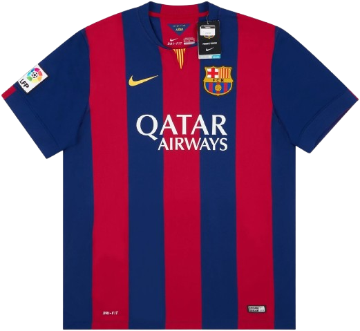
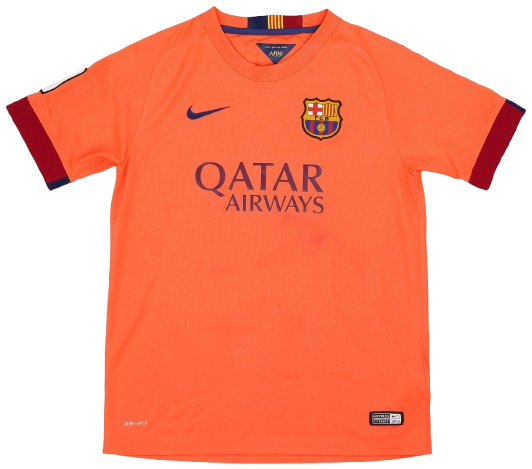
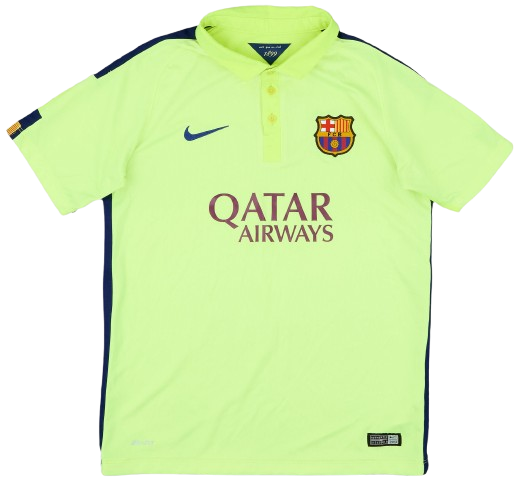
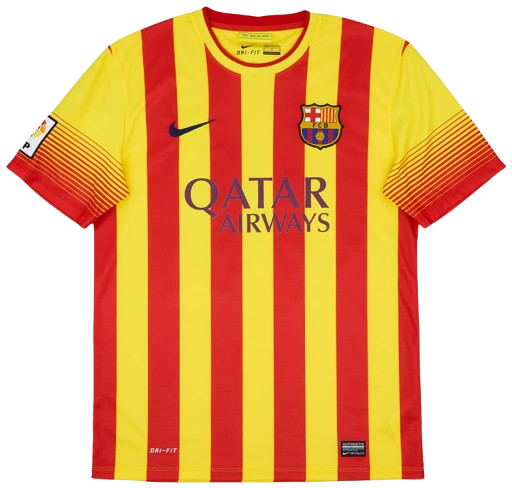

Home Kit

The classic blaugrana look returns with bold vertical stripes and the Qatar Airways sponsor centered.
The 2014/15 season was one of the most historic and successful seasons in the history of FC Barcelona. It was the first season under new manager Luis Enrique, who rebuilt the team after a trophyless 2013/14 campaign. Barcelona formed one of the greatest attacking trios in football history with Lionel Messi, Luis Suárez, and Neymar, famously known as “MSN,” who combined for over 120 goals in all competitions. After a difficult start to the season, Barcelona found their rhythm and went on a dominant run, winning La Liga, the Copa del Rey, and the UEFA Champions League to complete a historic treble. They defeated Juventus F.C. 3–1 in the Champions League final in Berlin, with goals from Ivan Rakitić, Luis Suárez, and Neymar. The season was also special because it marked the final Barcelona season of club legend Xavi Hernández, who ended his career at the club by lifting the Champions League trophy as captain. The 2014/15 team is widely considered one of the greatest teams in football history due to its attacking dominance, tactical evolution, and historic treble.

The classic blaugrana look returns with bold vertical stripes and the Qatar Airways sponsor centered.

A bright, high-visibility away design with strong contrast details — a standout look from the treble season.

A warmer-toned alternate kit with a clean sponsor layout — designed for contrast and variety.

A special fourth option with a unique color identity — this kit adds depth to Barcelona’s 2014/15 wardrobe.